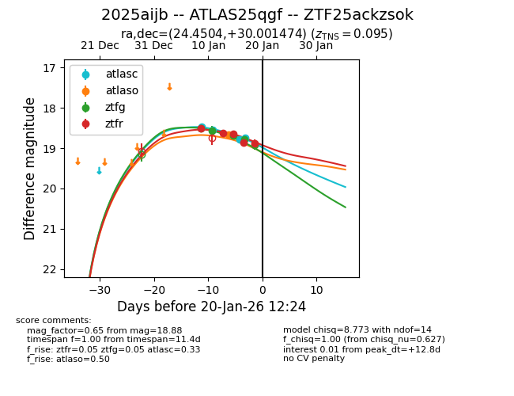
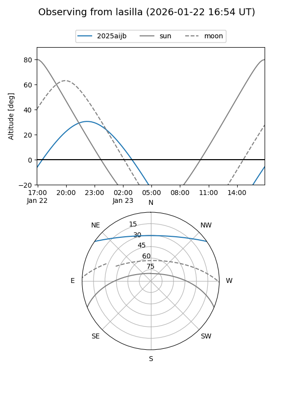
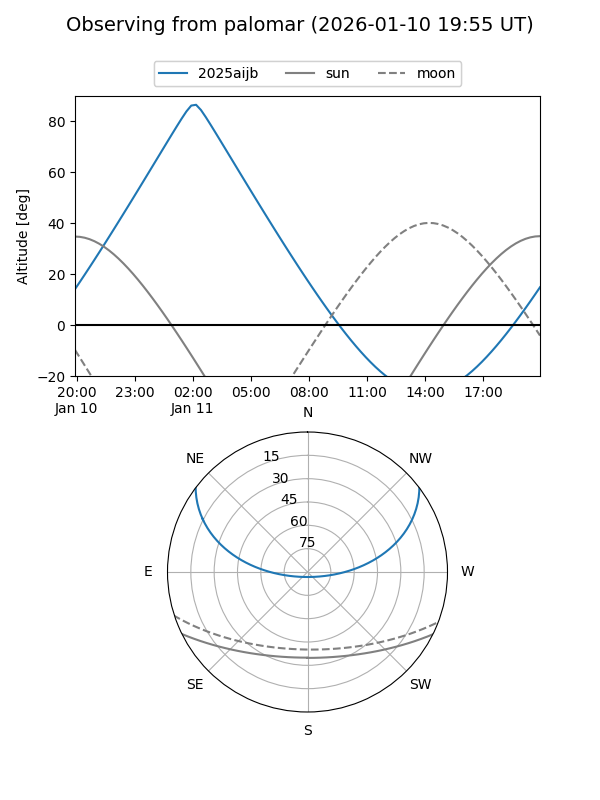
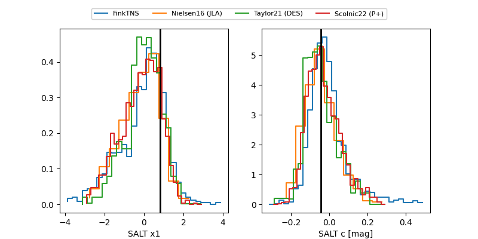

2025aijb
Target 2025aijb at 2026-01-22 01:36
Aliases and brokers:
FINK: link
Lasair: link
ALeRCE: link
TNS: link
YSE: link
alt names
ZTF25ackzsok (ztf,fink_ztf)
2025aijb (tns,yse)
ATLAS25qgf (atlas)
Coordinates:
equatorial (ra, dec) = 24.4504,+30.00147
equatorial (HMS+DMS) = 01:37:48.10,+30:00:05.31
galactic (l, b) = (134.7464,-31.80440)
Flags:
confirmed ia
Photometry:
last atlasc=18.74, atlaso=18.66, ztfg=19.13, ztfr=18.88
4 atlasc, 1 atlaso, 6 ztfg, 5 ztfr detections
Lightcurve

Visibility


Additional plots
